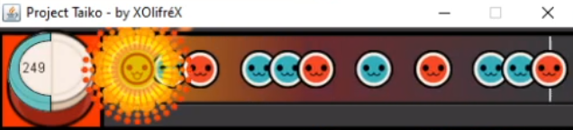

Coding
Learned to code back in Highschool 2014 and ever since then life hasn't been the same. I like to spend my free time using this skill in a veriaty of projects and random time killers. My languages of choise are C#, NodeJS & C++.
Though I love programming, I don't necessarily use this skill all the times to build things. I really enjoy finding secrets and things you're not supposed to see in existing application, more specifically games.
Here I'd like to highlight some coding subjects I'm interested in. :)
Most of these can be found in my Github page.
Decompilation
One of the projects that's centered around finding secrets in applications is my Mario Kart Advance decompilation project. Decompiling means translating the machine code of the application back to a higher level language like C, or w/e the application was originally written in. You would do this by analysing pieces of assembly code and try to write equivalent C code that would output the same assembly code. Once it's matching, you know you've written code that will do exactly the same the original does.
By decompiling games, you not only will better understand how the game works, but also find secrets and unused pieces of code and functionality. Without performing reverse engineering, you would never have known about these things. Some games hide more things than others, it's a very interesting process to go through to hopefully find in the end things the original developers never intended for you, the end consumer, to see. :)
Because of decompilation, you will get a source that will output the same exact program, but that means you will have freedom over the code, so porting would become a possibility! For example, the N64 game Super Mario 64 was fully decompiled, and now you see that game running natively on other platforms like the Switch or a PC without emulation. Decompilations make sure any application is open and anyone can do with it what it wants.
I'm very new to this whole concept and still learning, but I follow the decompilation scene very closely, I find all of this stuff very interesting and really exciting!
Currently I have two decompilations projects: one for Mario Kart Advance as described, and one for the GBA game Hamtaro: Ham Ham Games. Activity on them fluctuates heavily.
Picture of the decompilation project of Mario Kart Advance with an artistic touch (I tried)!
Game Developement
I love coding & I like gaming, so it's no surprised that I'm interested in game development. I'm very interested in Graphic Programming using libraries like OpenGL or Vulkan and learning how they work and can be used in games or other graphics applications.
My first game I ever wrote was in 2015. I made a basic Taiko clone using Java with at the time the new JavaFX library. It was very basic and had its flaws, but I learned a lot.
In the future I'd like to learn how to 3D model and dive into the Unity game engine and fully learn how to use it.
Gameplay picture of Project Taiko!
Game Code & Binary Analyse
It's just a fancy name for saying I like to open up a debugger while I'm playing a game to try and figure out how specific parts works, purely out of curiousity. These can be for finding cheats and other quality of life improvements. For example, disabling wall hitboxes to explore the game world to your desire. Usually I start doing the initial analysis with Cheat Engine and then once I have found some clues I open up a real debugger and go through the machine code. I'm not an expert in this, so I don't succeed often, but everytime I try, I learn something new. It's really fun! :)
Besides analysing game code, I like opening up the games asset files too and see how all its texture, sounds and the likes are stored. Usually I like to use my findings to make an editor for these files to include whatever I want to the application.
These projects can, as I said earlier, be found on my Github page. :)
Random
Some more unrelated topics I like to explore is everything around emulation! I'm a big video game preservation fan and emulation plays a major role in making sure all previous and current game consoles stay in tact even when the original physical ones inevitable die. I follow the emulation development scene closely and like to dive into the code to see how they work. I have once made a emulator pf the Monky CPU that was used in University to teach me how a CPU worked.
For Mario Kart I'm currently in a project for making a new tournament creation website. It's still activily in progress, so I cannot show how it looks so far. The tech stack we're using is MongoDB + NodeJS with React.